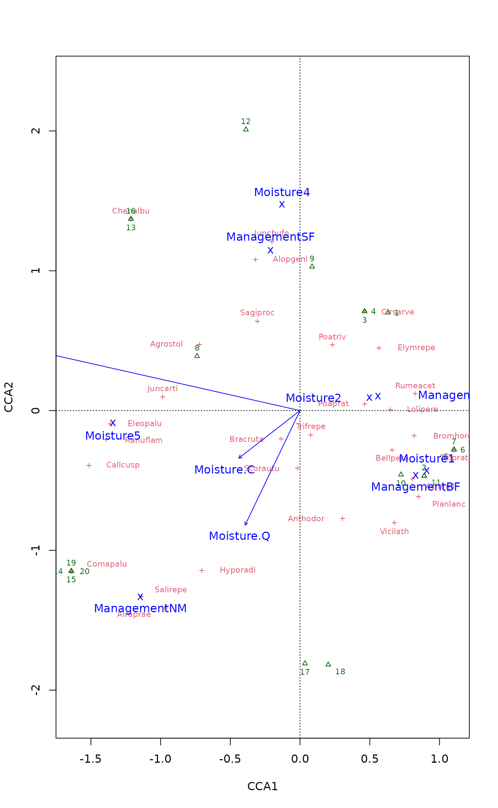
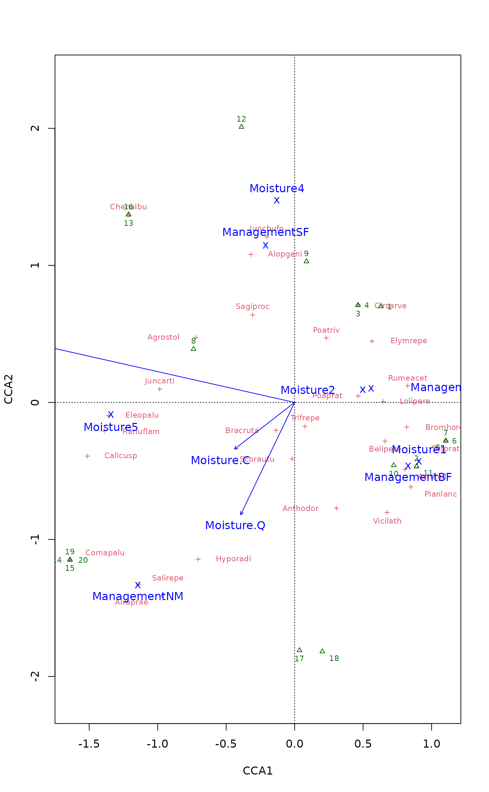

Plot or Extract Results of Constrained Correspondence Analysis or Redundancy Analysis
plot.cca.RdFunctions to plot or extract results of constrained correspondence analysis
(cca), redundancy analysis (rda), distance-based
redundancy analysis (dbrda) or
constrained analysis of principal coordinates (capscale).
Usage
# S3 method for class 'cca'
plot(x, choices = c(1, 2), display = c("sp", "wa", "cn"),
scaling = "species", type, xlim, ylim, const,
correlation = FALSE, hill = FALSE, optimize = FALSE, arrows = FALSE,
spe.par = list(), sit.par = list(), con.par = list(), bip.par = list(),
cen.par = list(), reg.par = list(), ...)
# S3 method for class 'cca'
text(x, display = "sites", labels, choices = c(1, 2),
scaling = "species", arrow.mul, head.arrow = 0.05, select, const,
axis.bp = FALSE, correlation = FALSE, hill = FALSE, ...)
# S3 method for class 'cca'
points(x, display = "sites", choices = c(1, 2),
scaling = "species", arrow.mul, head.arrow = 0.05, select, const,
axis.bp = FALSE, correlation = FALSE, hill = FALSE, ...)
# S3 method for class 'cca'
scores(x, choices = c(1,2), display = "all",
scaling = "species", hill = FALSE, tidy = FALSE, droplist = TRUE,
...)
# S3 method for class 'rda'
scores(x, choices = c(1,2), display = "all",
scaling = "species", const, correlation = FALSE, tidy = FALSE,
droplist = TRUE, ...)
# S3 method for class 'cca'
summary(object, digits = max(3, getOption("digits") - 3), ...)
# S3 method for class 'cca'
labels(object, display, ...)Arguments
- x, object
A
ccaresult object.- choices
Axes shown.
- display
Scores shown. These must include some of the alternatives
"species"or"sp"for species scores,sitesor"wa"for site scores,"lc"for linear constraints or LC scores, or"bp"for biplot arrows or"cn"for centroids of factor constraints instead of an arrow, and"reg"for regression coefficients (a.k.a. canonical coefficients). The alternative"all"selects all available scores.- scaling
Scaling for species and site scores. Either species (
2) or site (1) scores are scaled by eigenvalues, and the other set of scores is left unscaled, or with3both are scaled symmetrically by square root of eigenvalues. Corresponding negative values can be used inccato additionally multiply results with \(\sqrt(1/(1-\lambda))\). This scaling is know as Hill scaling (although it has nothing to do with Hill's rescaling ofdecorana). With corresponding negative values inrda, species scores are divided by standard deviation of each species and multiplied with an equalizing constant. Unscaled raw scores stored in the result can be accessed withscaling = 0.The type of scores can also be specified as one of
"none","sites","species", or"symmetric", which correspond to the values0,1,2, and3respectively. Argumentscorrelationandhillinscores.rdaandscores.ccarespectively can be used in combination with these character descriptions to get the corresponding negative value.- correlation, hill
logical; if
scalingis a character description of the scaling type,correlationorhillare used to select the corresponding negative scaling type; either correlation-like scores or Hill's scaling for PCA/RDA and CA/CCA respectively. See argumentscalingfor details.- optimize
Optimize locations of text to reduce overlap and plot point in the actual locations of the scores. Uses
ordipointlabel.- arrows
Draw arrows from the origin. This will always be
TRUEfor biplot and regression scores in constrained ordination (ccaetc.). Setting thisTRUEwill draw arrows for any type of scores. This allows, e.g, using biplot arrows for species. The arrow head will be at the value of scores, and possible text is moved outwards.- spe.par, sit.par, con.par, bip.par, cen.par, reg.par
Lists of graphical parameters for species, sites, constraints (lc scores), biplot and text, centroids and regression. These take precedence over globally set parameters and defaults.
- tidy
Return scores that are compatible with ggplot2: all scores are in a single
data.frame, score type is identified by factor variablescore, the names by variablelabel, and weights (in CCA) are in variableweight. The possible values ofscorearespecies,sites(for WA scores),constraints(LC scores for sites calculated directly from the constraining variables),biplot(for biplot arrows),centroids(for levels of factor variables),factorbiplot(biplot arrows that model centroids),regression(for regression coefficients to find LC scores from constraints). These scores cannot be used with conventionalplot, but they are directly suitable to be used with the ggplot2 package.- type
Type of plot: partial match to
textfor text labels,pointsfor points, andnonefor setting frames only. If omitted,textis selected for smaller data sets, andpointsfor larger.- xlim, ylim
the x and y limits (min,max) of the plot.
- labels
Optional text to be used instead of row names. If you use this, it is good to check the default labels and their order using
labelscommand.- arrow.mul
Factor to expand arrows in the graph. Arrows will be scaled automatically to fit the graph if this is missing.
- head.arrow
Default length of arrow heads.
- select
Items to be displayed. This can either be a logical vector which is
TRUEfor displayed items or a vector of indices of displayed items.- const
General scaling constant to
rdascores. The default is to use a constant that gives biplot scores, that is, scores that approximate original data (seevignetteon ‘Design Decisions’ withbrowseVignettes("vegan")for details and discussion). Ifconstis a vector of two items, the first is used for species, and the second item for site scores.- droplist
Return a matrix instead of a named list when only one kind of scores were requested.
- axis.bp
Draw
axisfor biplot arrows.- digits
Number of digits in output.
- ...
Parameters passed to graphical functions. These will be applied to all score types, but will be superseded by score type parameters list (except
type = "none"which will only draw the frame).
Details
Same plot function will be used for cca,
rda, dbrda and
capscale. This produces a quick, standard plot with
current scaling.
The plot function sets colours (col), plotting
characters (pch) and character sizes (cex) to default
values for each score type. The defaults can be changed with global
parameters (“dot arguments”) applied to all score types, or a
list of parameters for a specified score type (spe.par,
sit.par etc.) which take precedence over global parameters and
defaults. This allows full control of graphics. The scores are plotted
with text.ordiplot and points.ordiplot and
accept paremeters of these functions. In addition to standard
graphical parameters, text can be plotted over non-transparent label
with arbument bg = <colour>, and location of text can be
optimized to avoid over-writing with argument optimize = TRUE,
and argument arrows = TRUE to draw arrows pointing to the
ordination scores.
the plot function returns (invisible) ordiplot
object. You can save this object and use it to construct your plot
with ordiplot functions points and text. These
functions can be used in pipe (|>) which allows incremental
building of plots with full control of graphical parameters for each
score type. With pipe it is best to first create an empty plot with
plot(<cca-result>, type = "n") and then add elements with
points, text of ordiplot or
ordilabel. Within pipe, the first argument should be a
quoted score type, and then the grapcical parameters. The full
object may contain scores with names
‘species’, ‘sites’, ‘constraints’, ‘biplot’, ‘regression’, ‘centroids’
(some of these may be missing depending on your model and are only
available if given in display). The first
plot will set the dimensions of graph, and if you do not use
some score type there may be empty white space. In addition to
ordiplot text and points, you can also use
ordilabel and ordipointlabel in a
pipe. Unlike in basic plot, there are no defaults for score
types, but all graphical parameters must be set in the command in
pipe. On the other hand, there may be more flexibility in these
settings than in plot arguments, in particular in
ordilabel and ordipointlabel.
Environmental variables receive a special treatment. With
display="bp", arrows will be drawn. These are labelled with
text and unlabelled with points. The arrows have
basically unit scaling, but if sites were scaled (scaling
"sites" or "symmetric"), the scores of requested axes
are adjusted to the plotting area. With
scaling = "species" or scaling = "none", the arrows will
be consistent with vectors fitted to linear combination scores
(display = "lc" in function envfit), but with
other scaling alternatives they will differ. The basic plot
function uses a simple heuristics for adjusting the unit-length arrows
to the current plot area, but the user can give the expansion factor
in arrow.mul. With display="cn" the centroids of levels
of factor variables are displayed. With this option continuous
variables still are presented as arrows and ordered factors as arrows
and centroids. With display = "reg" arrows will be drawn for
regression coefficients (a.k.a. canonical coefficients) of constraints
and conditions. Biplot arrows can be interpreted individually, but
regression coefficients must be interpreted all together: the LC score
for each site is the sum of regressions displayed by arrows. The
partialled out conditions are zero and not shown in biplot arrows, but
they are shown for regressions, and show the effect that must be
partialled out to get the LC scores. The biplot arrows are more
standard and more easily interpreted, and regression arrows should be
used only if you know that you need them.
The ordination object has text and points methods that
can be used to add items to an existing plot from the ordination
result directly. These should be used with extreme care, because you
must set scaling and other graphical parameters exactly similarly as
in the original plot command. It is best to avoid using these
historic functions and instead configure plot command or use
pipe.
Palmer (1993) suggested using linear constraints (“LC scores”)
in ordination diagrams, because these gave better results in
simulations and site scores (“WA scores”) are a step from
constrained to unconstrained analysis. However, McCune (1997) showed
that noisy environmental variables (and all environmental measurements
are noisy) destroy “LC scores” whereas “WA scores” were
little affected. Therefore the plot function uses site scores
(“WA scores”) as the default. This is consistent with the usage
in statistics and other functions in R (lda,
cancor).
Value
The plot function returns
invisibly a plotting structure which can be used by function
identify.ordiplot to identify the points or other
functions in the ordiplot family or in a pipe to add new
graphicael elements with ordiplot text and
points or with ordilabel and
ordipointlabel.
See also
The function builds upon ordiplot and its
text and points functions. See these to find new
graphical parameters such as arrows (for drawing arrows),
bg (for writing text on non-transparent label) and
optimize (to move text labels of points to avoid overwriting).
Examples
data(dune, dune.env)
mod <- cca(dune ~ Moisture + Management, dune.env)
## default and modified plot
plot(mod, scaling="sites")
 plot(mod, scaling="sites", type = "text",
sit.par = list(type = "points", pch=21, col="red", bg="yellow", cex=1.2),
spe.par = list(col="blue", cex=0.8),
cen.par = list(bg="white"))
plot(mod, scaling="sites", type = "text",
sit.par = list(type = "points", pch=21, col="red", bg="yellow", cex=1.2),
spe.par = list(col="blue", cex=0.8),
cen.par = list(bg="white"))
 ## same with pipe
plot(mod, type="n", scaling="sites") |>
points("sites", pch=21, col="red", bg = "yellow", cex=1.2) |>
text("species", col="blue", cex=0.8) |>
text("biplot") |>
text("centroids", bg="white")
## LC scores & factors mean much overplotting: try optimize=TRUE
plot(mod, display = c("lc","sp","cn"), optimize = TRUE,
bip.par = list(optimize = FALSE)) # arrows and optimize mix poorly

## catch the invisible result and use ordiplot support - the example
## will make a biplot with arrows for species and correlation scaling
pca <- rda(dune)
pl <- plot(pca, type="n", scaling="sites", correlation=TRUE)
with(dune.env, points(pl, "site", pch=21, col=1, bg=Management))
text(pl, "sp", arrow=TRUE, length=0.05, col=4, cex=0.6, xpd=TRUE)
with(dune.env, legend("bottomleft", levels(Management), pch=21,
pt.bg=1:4, bty="n"))
## Pipe
plot(pca, type="n", scaling="sites", correlation=TRUE) |>
points("sites", pch=21, col = 1, cex=1.5, bg = dune.env$Management) |>
text("species", col = "blue", arrows = TRUE, xpd = TRUE, font = 3)
## Scaling can be numeric or more user-friendly names
## e.g. Hill's scaling for (C)CA
scrs <- scores(mod, scaling = "sites", hill = TRUE)
## or correlation-based scores in PCA/RDA
scrs <- scores(rda(dune ~ A1 + Moisture + Management, dune.env),
scaling = "sites", correlation = TRUE)
## same with pipe
plot(mod, type="n", scaling="sites") |>
points("sites", pch=21, col="red", bg = "yellow", cex=1.2) |>
text("species", col="blue", cex=0.8) |>
text("biplot") |>
text("centroids", bg="white")
## LC scores & factors mean much overplotting: try optimize=TRUE
plot(mod, display = c("lc","sp","cn"), optimize = TRUE,
bip.par = list(optimize = FALSE)) # arrows and optimize mix poorly

## catch the invisible result and use ordiplot support - the example
## will make a biplot with arrows for species and correlation scaling
pca <- rda(dune)
pl <- plot(pca, type="n", scaling="sites", correlation=TRUE)
with(dune.env, points(pl, "site", pch=21, col=1, bg=Management))
text(pl, "sp", arrow=TRUE, length=0.05, col=4, cex=0.6, xpd=TRUE)
with(dune.env, legend("bottomleft", levels(Management), pch=21,
pt.bg=1:4, bty="n"))
## Pipe
plot(pca, type="n", scaling="sites", correlation=TRUE) |>
points("sites", pch=21, col = 1, cex=1.5, bg = dune.env$Management) |>
text("species", col = "blue", arrows = TRUE, xpd = TRUE, font = 3)
## Scaling can be numeric or more user-friendly names
## e.g. Hill's scaling for (C)CA
scrs <- scores(mod, scaling = "sites", hill = TRUE)
## or correlation-based scores in PCA/RDA
scrs <- scores(rda(dune ~ A1 + Moisture + Management, dune.env),
scaling = "sites", correlation = TRUE)